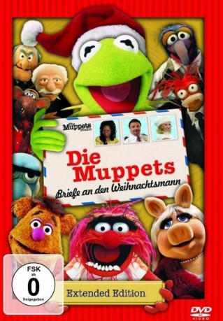
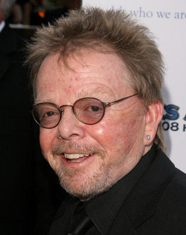

#2071 Die Muppets - Briefe an den Weihnachtsmann
Alternativ: A Muppets Christmas: Letters to Santa
 
 IMDB-Wertung: 6.7 / 10
IMDB-Wertung: 6.7 / 10  Metascore: 0
Metascore: 0 
Weihnachten steht vor der Tür und da dürfen Kermit, Gonzo, Miss Piggy und der Rest der Muppetbande natürlich nicht fehlen! Als Gonzo vergisst seine drei Briefe an den Weihnachtsmann abzuschicken, benötigt er die Hilfe von Kermit und den anderen Muppets. Gemeinsam machen sich die Freunde auf den Weg zum Nordpol, um die Briefe persönlich zu überbringen und Gonzos Weihnachtswunsch wahr werden zu lassen. Auf ihrer großen Reise erkennen sie wie schön die Weihnachtszeit sein kann, wenn man sie mit all jenen verbringt, die einem besonders am Herzen liegen.
Jahr: 2008
Dauer: 60 Minuten
FSK:
Land: USA Studio: NBCTonspuren:
Untertitel:
Auflösung: 1080p (1920x1080) Größe: 2273 MB
Genre: Musik, Komödie, Familie, Weihnachten
Regisseur: Kirk R. Thatcher
Drehbuch: Hugh Fink, Scott Ganz, Andrew Samson, Paul Williams, Paul Williams
Soundtrack: Chris Caswell, Paul Williams
Darsteller:
 Steve Whitmire als Kermit the Frog / Rizzo the Rat / Statler / Beaker
Steve Whitmire als Kermit the Frog / Rizzo the Rat / Statler / Beaker Dave Goelz als The Great Gonzo / Waldorf / Dr. Bunsen Honeydew / Zoot
Dave Goelz als The Great Gonzo / Waldorf / Dr. Bunsen Honeydew / Zoot Bill Barretta als Pepe the Prawn / Swedish Chef / Rowlf / Dr. Teeth / Bobo the Bear / Husband Pigeon
Bill Barretta als Pepe the Prawn / Swedish Chef / Rowlf / Dr. Teeth / Bobo the Bear / Husband Pigeon- Eric Jacobson als Fozzie Bear / Miss Piggy / Animal / Sam the Eagle
- Michael Bloomberg als Himself
 Whoopi Goldberg als Taxi Driver
Whoopi Goldberg als Taxi Driver- Richard Griffiths als Santa Claus
 Jane Krakowski als Claire's Mom
Jane Krakowski als Claire's Mom Nathan Lane als Officer Meany
Nathan Lane als Officer Meany Jesse L. Martin als Postal Worker
Jesse L. Martin als Postal Worker- Petra Nemcova als Beaker's Girlfriend
- Madison Pettis als Claire
 Steve Schirripa als Mobster
Steve Schirripa als Mobster Tony Sirico als Mobster
Tony Sirico als Mobster Uma Thurman als Joy
Uma Thurman als Joy-  Paul Williams als Elf
- Stephanie D'Abruzzo als Additional Muppets
 Matt Vogel als Floyd Pepper / Lew Zealand / Crazy Harry / Robin the Frog / Son Pigeon / Additional Muppets
Matt Vogel als Floyd Pepper / Lew Zealand / Crazy Harry / Robin the Frog / Son Pigeon / Additional Muppets- Peter Linz als Additional Muppets
- David Rudman als Scooter / Janice / Additional Muppets
 Nadine Ellis als Dancer
Nadine Ellis als Dancer- Kevin Sateri als Dancer
- Warren Adams als Dancer
- Peter Conboy als Holiday Commuter , uncredited
- Paul T. Gosselin als Postal Customer , uncredited
 Bill Timoney als Additional voices , uncredited
Bill Timoney als Additional voices , uncredited- Pam Arciero als Additional Muppets
- Heather Asch als Additional Muppets
- Tyler Bunch als Wife Pigeon / Additional Muppets
- Leslie Carrara als Additional Muppets
- James Godwin als Additional Muppets
- James J. Kroupa als Additional Muppets
- Tim Lagasse als Additional Muppets
- Noel MacNeal als Sweetums / Additional Muppets
- Jim Martin als Additional Muppets
- Paul McGinnis als Additional Muppets
- Martin P. Robinson als Sweetums / Additional Muppets
- Douglas Caldwell als Dancer
- Mary Ann Lamb als Dancer
- Terrance Reddick als Dancer
- Guy Veryzer als Mailman - Muppet Tosser , uncredited
Datei: X:\Kinder Collections\Muppets\Muppets - Briefe an den Weihnachtsmann, Die (2008, FSK, 1920x1080).mkv seit 29.09.2015
Festplatte: Kinder-Filme+Trick
 Es gibt insgesamt 13 Filme in der Gruppe 'Kinder Collections\Muppets'
Es gibt insgesamt 13 Filme in der Gruppe 'Kinder Collections\Muppets'